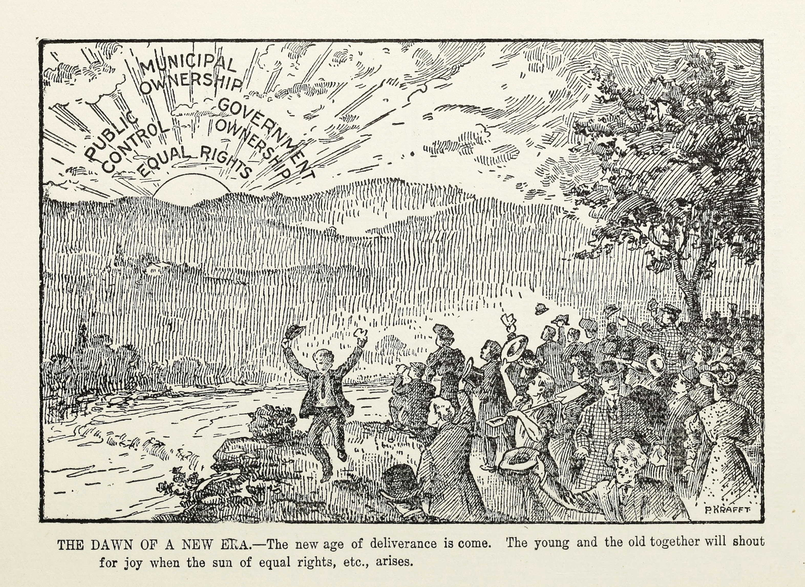
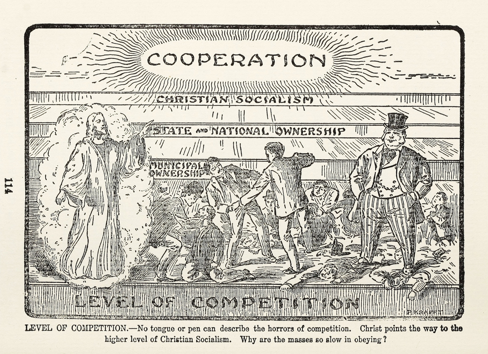
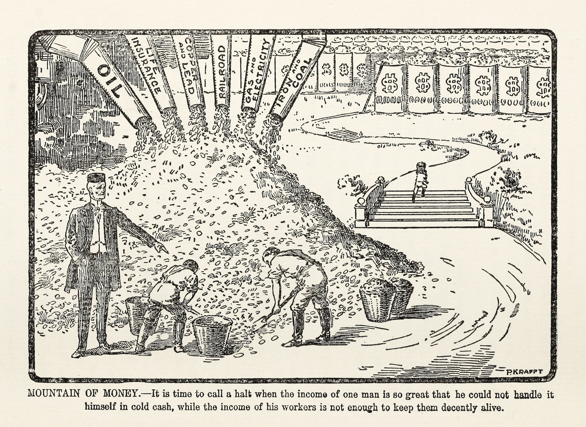
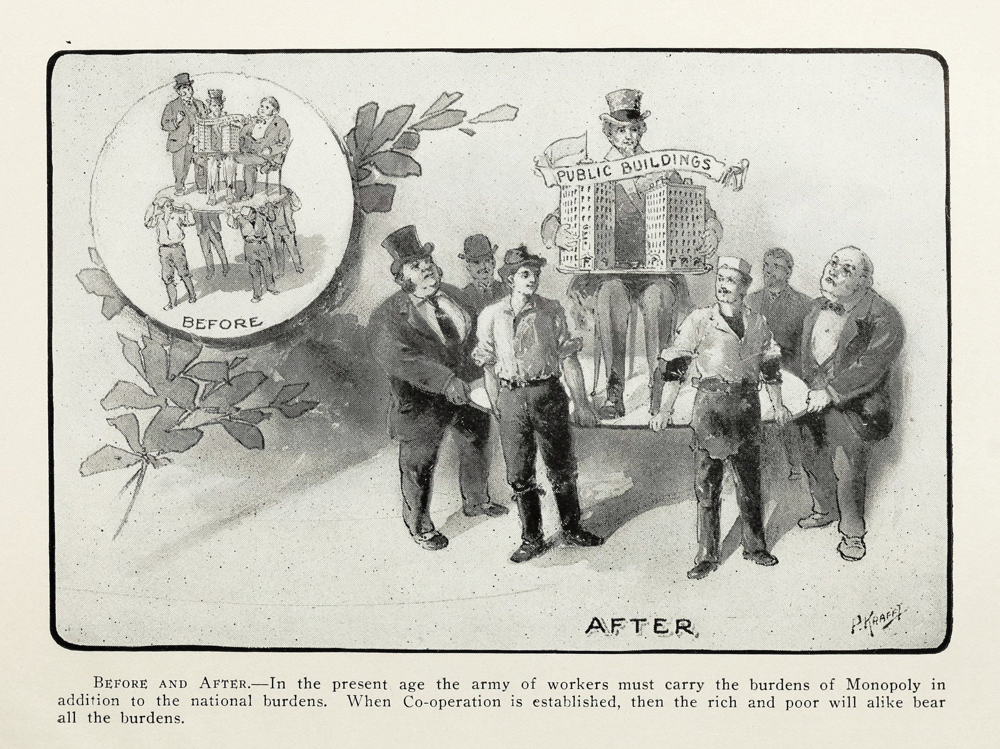
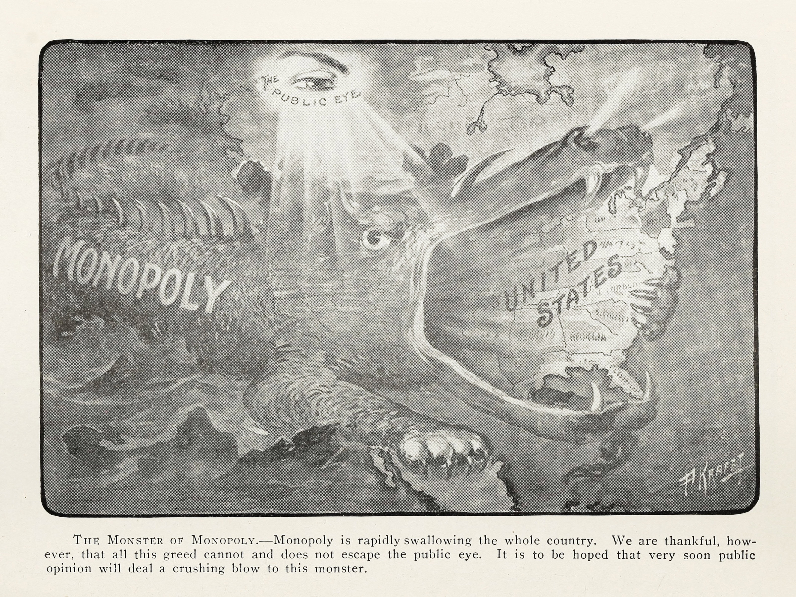
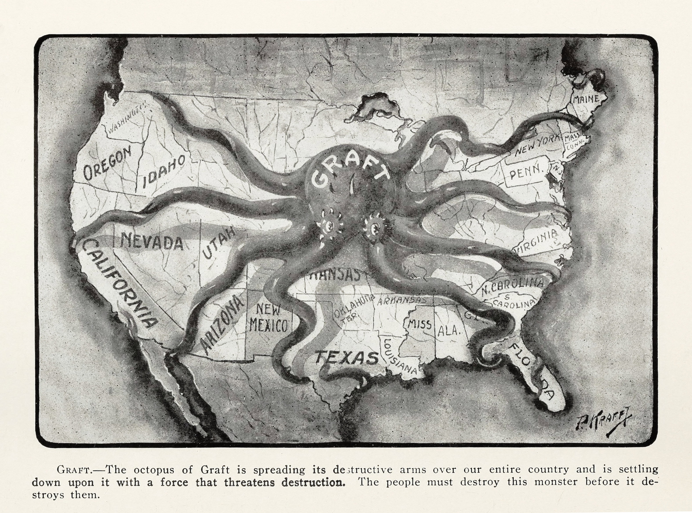
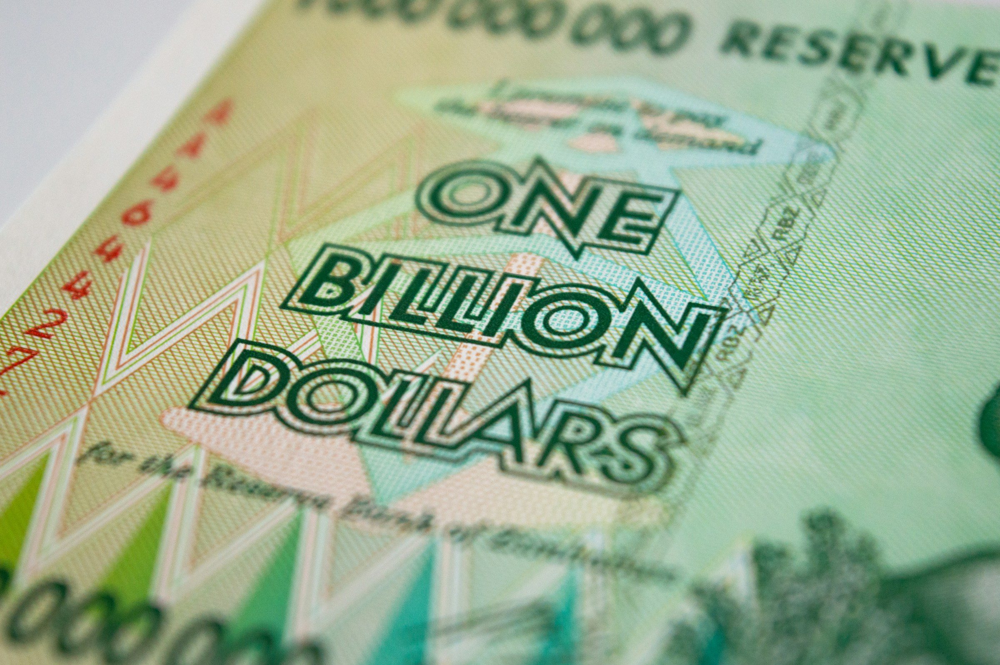
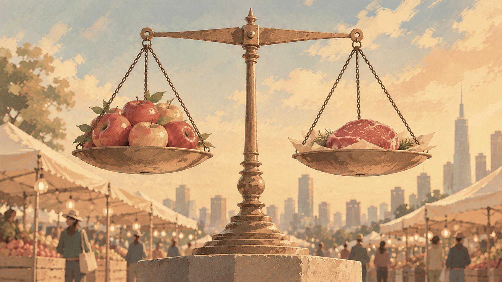

Early Era

The Dawn of a New EraPublished in Capital and Labor (1907), this illustration presents public ownership, public control, and equal rights as signs of a new era.

Level of CompetitionIn Capital and Labor (1907), Paul Krafft criticizes the pressures of economic competition. The illustration reflects the period's debate over whether rivalry or cooperation better serves workers.

Mountain of MoneyIn this 1907 satire, a wealthy man has others count his enormous piles of money. The scene contrasts concentrated riches with the limited earnings of workers.

Before and AfterThis 1907 cartoon contrasts workers carrying heavy burdens with a vision of shared responsibility through cooperation. It reflects the author's argument for a fairer economic system.

The Monster of MonopolyPaul Krafft depicts monopoly as a dangerous creature consuming the nation. The 1907 cartoon criticizes the growing power of concentrated businesses.

The Octopus of GraftIn this 1907 cartoon, the octopus symbolizes graft and the reach of political corruption. Its tentacles suggest how corruption can extend across public life.
Current Era
An illuminated city skyline represents the scale and energy of modern urban economies. The nighttime scene contrasts with the historical cartoons in the first gallery.
A clock tower rises above the surrounding cityscape, showing the contrast between traditional landmarks and modern urban development.

A One Billion Dollar BillA one-billion-dollar banknote from Zimbabwe illustrates how extreme inflation can produce unusually large currency denominations. Its face value is not evidence of equivalent purchasing power.
U.S. dollar bills being deposited into a piggy bank illustrate saving and personal financial planning in a modern economy.
A black-and-white street photograph contrasts shopping and visible economic hardship. The scene invites viewers to consider inequality in a consumer economy.
Red-and-white playing cards offer a visual metaphor for chance, competition, and unequal economic outcomes.
Coming Era

Fruit, MeatValue can be exchanged only for real value.